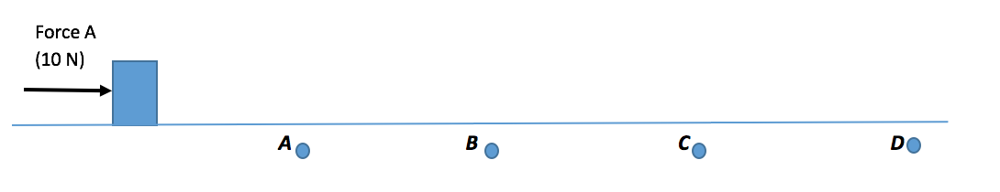

Relationship between force, mass, and acceleration. The acceleration of an object (in a given direction) is caused by (a) the net force acting on the object in that direction and (b) the mass of the object. This is Newton's second law. If the net force acting on an object in a direction is zero, then the object's acceleration in that direction would also be zero. You can easily check for yourself by plugging zero in for the net force into Newton's Second Law equation (below) to find the acceleration:
If the net force acting on the object in a given direction is not equal to zero, the object's speed will change, or it will accelerate, in that direction for as long as the force acts on the object.
Example 1. Force A (10 Newtons) acts on an object-that is initially at rest-in the horizontal direction. Because the object is on an ice surface, there is no friction acting on the object. So, the only force acting on the object in the horizontal direction is Force A. The force is constant (meaning it does not change; it is always 10 N) and keeps acting on the object all the way across the ice (to after Point D, shown below). So, the speed of the object will keep increasing all the way across the ice. It will be slowest at Point A, faster at Point B, still faster at Point C and fastest at Point D.
Because the object was pushed by a constant force (10 N) all the way across the ice, the acceleration of the object will also be constant (or will not change). A constant acceleration means that every second, the object's speed will increase by the same amount. If the object had a mass of 2 kg, then its acceleration would be 5 m/s2 (because, applying Newton's Second Law, 10 N divided by 2 kg is 5 m/s2). This means that every second the force acts on the object, its speed increases by 5 m/s. This constant acceleration of 5 m/s2 is shown in the graph below.
Reminder: If the net force acting on an object in a given direction is not equal to zero, the object will accelerate in that direction for as long as the force acts on the object.
But, the moment the net force in that direction is zero, the object will no longer accelerate in that direction. So, in Example 1 (shown above), if Force A stops acting on the object at Point C, the object would also stop accelerating at Point C.


***Note for Teachers: You can access more information about this website and find other resources for science inquiry on the ISP Tutor website.
©2021 Klahr Lab, Carnegie Mellon University. All Rights Reserved
Carnegie Mellon University | Dept. of Psychology | 5000 Forbes Ave. | Pittsburgh, PA 15213 The TED project was funded in part by the Institute of Education Science (IES), Grant R305H060034, and in part by the National Science Foundation, Grant SBE035442. The ISP Tutor project is funded by IES, Grant R305A170176.
The research reported here was supported by the Institute of Education Sciences, U.S. Department of Education, through Grant R305A170176 to Carnegie Mellon University. The opinions expressed are those of the authors and do not represent views of the Institute or the U.S. Department of Education.